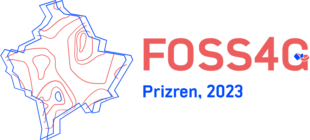

コミュニティ
GDAL's community interacts through Mailing List, GitHub, and Chat. Please feel welcome to ask questions and participate in all of the venues. The Mailing List communication channel is for general questions, development discussion, and feedback. The GitHub communication channel is for development activities, bug reports, and testing. The Chat room is for real-time chat activities such as meetings and interactive debugging sessions.
行動規範
GDAL uses a Code of Conduct which governs how we behave in any GDAL forum or event and whenever we will be judged by our actions. We expect it to be honored by everyone who participates in the GDAL community formally or informally, or claims any affiliation with the project.
メーリングリスト
Developers and users of GDAL participate on the GDAL mailing list. It is OK to ask questions about how to use GDAL, how to integrate GDAL into your own software, and report issues that you might have.
GitHub
Visit http://github.com/OSGeo/GDAL to file issues you might be having with the software. GitHub is also where you can obtain a current development version of the software in the git revision control system. The GDAL project is eager to take contributions in all forms, and we welcome those who are willing to roll up their sleeves and start filing tickets, pushing code, generating builds, and answering questions.
チャット
You can find some GDAL developers in the IRC channel #gdal on Libera.Chat. This mechanism is usually reserved for active meetings and other outreach with the community. The Mailing List and GitHub avenues are going to be more productive communication channels in most situations.
Conference
FOSS4G 2023 is the leading annual conference for free and open source geospatial software. It will include presentations related to GDAL/OGR, and some of the GDAL/OGR development community will be attending. It is the event for those interested in GDAL/OGR, other FOSS geospatial technologies and the community around them. The conference will be held at Prizren, Kosovo from June 26th to July 2nd 2023.
Governance and Community Participation
OSGeo Project Membership
Originally, GDAL has been lead by Frank Warmerdam, the original author of much of GDAL/OGR, though with contributions and input from a variety of people. As of February 2006 GDAL/OGR became a founding project of the Open Source Geospatial Foundation (OSGeo) and began a transition to a more community oriented governance model - in keeping with OSGeo expectations.
Membership as an OSGeo project provides assurances that a variety of best practices are being employed by the GDAL/OGR project, and that users and contributors can be assured of responsible project operation and continuity of the project. In particular:
A consensus oriented Project Management Committee will be in charge of the project.
Project source code and contributions will be vetted to ensure code is properly made available, protecting contributors and users of GDAL/OGR.
Part of the systems infrastructure used by the project is provided by the foundation, with responsible backup and redundancy to minimize disruptions.
Project Steering Committee
As of April 2006 (following the GDAL/OGR 1.3.2 release) the project has been placed in the hands of a Project Steering Committee. This project steering committee operates under the rules of RFC 1: Project Management Committee Guidelines, and is overall responsible for decisions related to the GDAL/OGR project. The current members are (@github username):
Frank Warmerdam (@warmerdam)
Daniel Morissette (@dmorissette)
Howard Butler (@hobu)
Tamas Szekeres (@szekerest)
Even Rouault (chair) (@rouault)
Jukka Rahkonen (@jratike80)
Kurt Schwehr (@schwehr)
Norman Barker (@normanb)
Sean Gillies (@sgillies)
Javier Jimenez Shaw (@jjimenezshaw)
Past members:
Andrey Kiselev (@strezen) (retired in 2019)
Mateusz Łoskot (@mloskot) (retired in 2023)
Note that discussion of proposals to the PSC take place on gdal-dev, and input from all subscribers is welcome. A list of past RFC is available for review.
GDAL Service Providers
GDAL is developed and supported by a rich ecosystem of businesses and individuals around the world. You can consult a list of GDAL Service Providers who can assist you in getting the best out of your GDAL investment.
Social media
You can follow GDAL official news on Mastodon: https://mastodon.social/@gdal / @gdal@mastodon.social